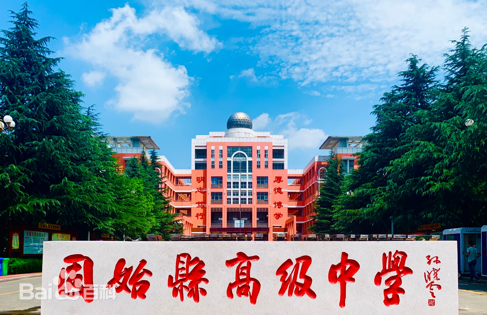
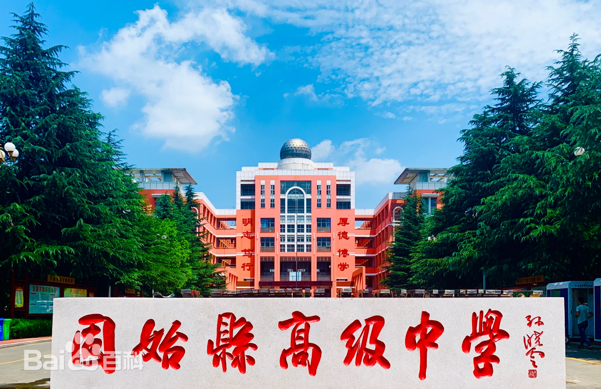

我的母校
固始县高级中学，始创于1958年，1960年正式建校，1978年被命名为“信阳地区重点高中”，2005年入选首批河南省示范性普通高中 。是清华大学优质生源中学 。 截至2015年，学校占地270余亩，建筑面积逾10万平方米，绿化面积近4万平方米。共有班级99个，在校生近万名，教职工440人。
固始县高级中学，始创于1958年，1960年正式建校，1978年被命名为“信阳地区重点高中”，2005年入选首批河南省示范性普通高中 。是清华大学优质生源中学 。 截至2015年，学校占地270余亩，建筑面积逾10万平方米，绿化面积近4万平方米。共有班级99个，在校生近万名，教职工440人。
